4 Cómo enfocar correctamente
4.1 Introducción
Terminados los preámbulos aclaratorios, se describen a continuación los pasos necesarios para llevar a cabo un correcto enfoque, logrando conseguir la máxima calidad de imagen posible en el microscopio que se esté utilizando.
4.2 Importante
Por favor, antes de continuar con las instrucciones tome nota que:
Para proseguir usted debe poder identificar las partes de un
microscopio compuestoy conocer su correspondiente uso. Dé un repaso a la sección Partes de un microscopio si es necesario.Usted no debe seguir estas instrucciones para utilizar el
objetivo 100xsi antes no ha leído la sección Cómo utilizar el objetivo 100x.
4.3 Procedimiento
Coloque el microscopio en una superficie firme, plana y estable, sujetándolo con seguridad por el
brazocon una mano y por labasecon la otra.Retire su cubierta antipolvo, si la tuviere.
Conecte el
cable de alimentaciónal microscopio y a la toma de corriente.Encienda el microscopio. La ubicación del
interruptorpuede variar según el fabricante y modelo. Suele encontrarse a un costado o detrás del aparato.Ajuste el nivel de intensidad de luz al mínimo posible con el
regulador de iluminación. Si el microscopio fue almacenado con propiedad, deberá encontrarlo ya en el mínimo.En la
fuente de iluminaciónhay unregulador, gírelo a fin de abrir eldiafragma de campoy permitir que su luz pase a través del sistema óptico.Si el microscopio fue guardado correctamente la última vez, usted deberá encontrarlo con el
objetivo 4xen uso. Si no fuera el caso, mueva elrevólvera esteobjetivo. Para girar elrevólverhágalo siempre desde sudisco de sujeción, nunca lo gire utilizando losobjetivoscomo punto de apoyo (no los toque).Observe a través de los
ocularesy vea que recibe algo de luz. Si no es el caso, revise los puntos anteriores.Ajuste la
distancia interpupilar—la separación entre losoculares— para adecuarlos a la distancia de sus ojos. Algunosocularesse configuran sujetando la base de losoculareshacia arriba y abajo, mientras que otros lo hacen hacia fuera o adentro. Sabrá que la distancia es la correcta cuando, al observar a través de losoculares, vea un único círculo.Coloque el
portaobjetoscon la muestra de interés en laplatinay asegúrela. Siempre manipule elportaobjetoscon cuidado por sus orillas y nunca lo toque en su superficie. Recuerde que elcubreobjetosva siempre hacia arriba.Ajuste la posición de la muestra con los controles de la
platina, desplazándose en el eje de la X y de la Y según sea necesario. No observe a través de losocularestodavía, hágalo viendo directamente alportaobjetossobre laplatina. El haz de luz debe atravesar la muestra de interés.Sin observar a través de los
ocularestodavía, utilice eltornillo macrométricopara desplazar laplatinahacia arriba. Si el microscopio cuenta con un tope de seguridad, hágalo hasta que no pueda subir más laplatina. Si no cuenta con ningún mecanismo de seguridad, súbala hasta aproximadamente 3 cm (30 mm) delobjetivo. Desde este momento ya no debería utilizar más eltornillo macrométrico.Observe a través de los
ocularesy verifique el enfoque. Si la muestra está fuera de foco, enfoque utilizando únicamente eltornillo micrométrico.Una vez logrado el enfoque de la muestra, se procede a refinar la calidad de la imagen, comenzando con la iluminación.
Cierre el
diafragma de campotodo lo que pueda.Debajo de la
platinahay untornillo pequeñoque sube y baja elcondensador—no visible en la imagen que ilustra las partes del microscopio de este documento, por encontrarse en el lado opuesto—. Suba y baje elcondensadorhasta que, a través de losoculares, observe un polígono con los bordes perfectamente definidos.Si el polígono no se encuentra en el centro del círculo que ve, utilice los
controles del condensadorpara llevarlo ahí. Loscontroles del condensadortienen la apariencia de tornillos, y son dos. Si elcondensadorque está utilizando carece de estos controles, omita este paso.Abra el
diafragma de campohasta que, observando a través de losoculares, vea que todo el campo de visión queda completamente iluminado, pero no más.
Ajuste la resolución y contraste de la imagen a su punto óptimo. Esto puede hacerse de dos formas.
La primera es hacerlo de forma subjetiva. Para ello, ajuste el
diafragma de aperturacon suregulador, de manera tal que su valor sea casi idéntico a laapertura numéricadelobjetivoque está empleando. Hágalo verificando la calidad de imagen a través de los oculares. Si abre demasiado eldiafragma de aperturala imagen quedará con bordes muy difusos; si lo abre muy poco, la imagen tendrá excesivo contraste. Encuentre el equilibrio entre ambos extremos, según la comodidad y las necesidades de la muestra.La segunda forma es hacerlo de manera empírica. Retire uno de los
ocularesde lacabezadel microscopio y colóquelo con la óptica mirando hacia arriba en una superficie limpia —a ser posible dentro de su propio envase—. Vea a través de donde antes estaba eloculary mueva eldiafragma de aperturahasta que su abertura se corresponda con el 80% del diámetro del círculo que ve. Una vez que lo consiga, coloque elocularen su lugar.
Finalmente perfeccione la cantidad de luz recibida de la
fuente de iluminación. Utilice para ello elregulador de iluminación, no eldiafragma de camponi eldiafragma de apertura. Recuerde: eldiafragma de campoes para controlar el área iluminada en el campo de visión y eldiafragma de aperturaes para regular la resolución y el contraste. Emplear uno o ambosdiafragmaspara ajustar la cantidad de luz es un error frecuente entre principiantes; evítelo.Si ha seguido correctamente todos pasos hasta aquí, deberá tener una imagen perfecta en iluminación, resolución y contraste. A tener en cuenta, por favor, que esto depende mucho de la calidad de las lentes del microscopio. La imagen que usted ve es lo mejor que el microscopio que está usando puede lograr.
Haga las observaciones que requiera con ese
objetivo. Cuando termine y quiera subir la magnificación, gire elrevólverun paso para llegar alobjetivoinmediato siguiente.Con el nuevo
objetivo, ajuste el enfoque con eltornillo micrométrico, jamás con elmacrométrico.En caso de ser necesario, mueva la
platinacon sus respectivos controles para tener en el centro de la imagen el objeto de interés.Repita los pasos 13 a 16 de este procedimiento para lograr la máxima calidad de imagen posible.
Para pasar a los siguientes
objetivos, repita los pasos correspondientes al enfoque y refinamiento de la calidad de imagen.
4.4 Diagrama de pasos
